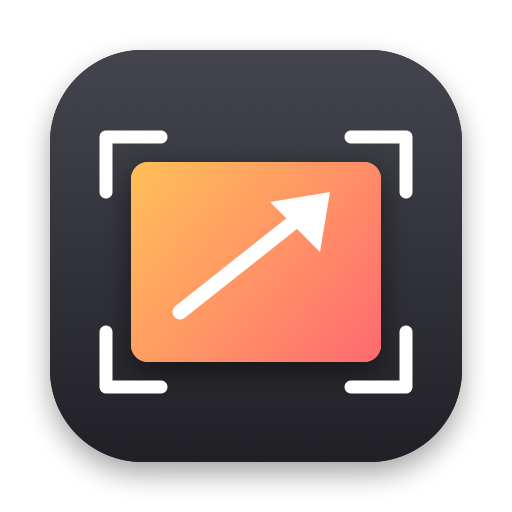
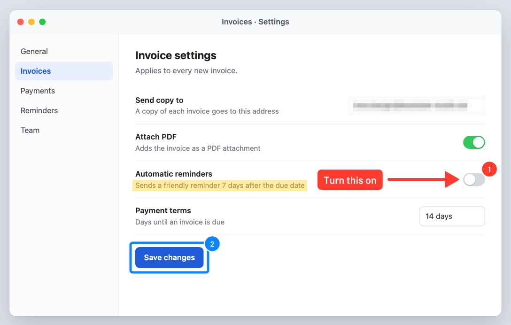

⇧⌘4
Capture area
The screen freezes so menus and hover states stay put. Drag an area or click a window. The picture lands on the clipboard, as image and as file, and the editor opens.

ShottyFreeze the screen, select, annotate, record, trim and share. A free, open-source capture tool for macOS, written in Rust.
Shotty sits in the menu bar and waits. Everything starts from the keyboard, and nothing leaves your Mac unless you press Upload.
The screen freezes so menus and hover states stay put. Drag an area or click a window. The picture lands on the clipboard, as image and as file, and the editor opens.
The whole display under the mouse, at full Retina resolution, straight to the clipboard and into the editor.
Pick an area, press Record, stop with the same shortcut. Cursor and clicks are shown; the microphone is one toggle away.
The editor opens right after a capture. Every tool has a single key, and what you see is what gets copied, at full resolution.

Short clips for bug reports and how-tos, small enough to paste into a chat.
Drag the area, or click a window or the desktop.
Press Record in the bar below the area. Shotty's own frame never shows up in the video.
Drag the yellow edges on the thumbnail strip, frame-accurate.
Compact MP4, HEVC or GIF. The file is on the clipboard when it's done.
Measured on a generated screen clip with code text, a scroll and a moving cursor.
Upload sends the capture to a small server you run yourself and copies the link. It opens a clean viewer with a preview in chat apps and a download button.
Download Shotty.app for Apple Silicon from the latest release. It isn't notarized, so run xattr -dr com.apple.quarantine /Applications/Shotty.app once after moving it to Applications. Or build it from source, which takes a couple of minutes the first time:
git clone https://github.com/mneuhaus/shotty.git
cd shotty
tools/bundle-macos.sh --install # release build, signed, into /Applications
open /Applications/Shotty.appbrew install ffmpeg, for trimming and exporting clips.Allow Screen Recording when macOS asks, then reopen Shotty. Coming from CleanShot X? Quit it first; both apps want ⇧⌘3, ⇧⌘4 and ⇧⌘5.